WPF Currency Project
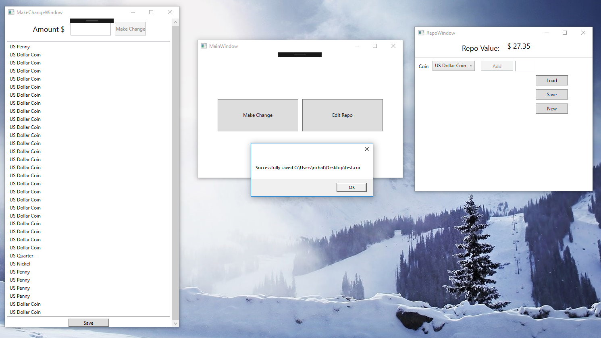This project was a demo/exercise for organizing multiple projects/libraries and building a WPF app using the MVVM design pattern. This project originally began as a simple Currency Library that leverages Object Oriented principles to create a library of abstracted Coin objects in two different types of currencies (US and UK) in the same hierarchy. These Coin Objects are managed by Currency Repo Objects, leveraging the Repository design pattern. I have also created an ASP .NET MVC version of this currency management demo leveraging the same Currency Library. That project is in a separate repo. This project also includes unit tests using Visual Studio's built in testing framework.
ASP.Net MVC Currency Project
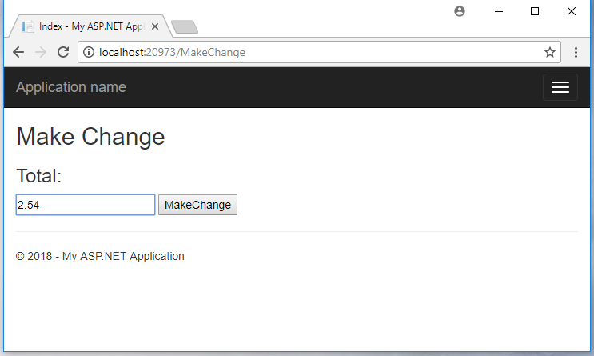 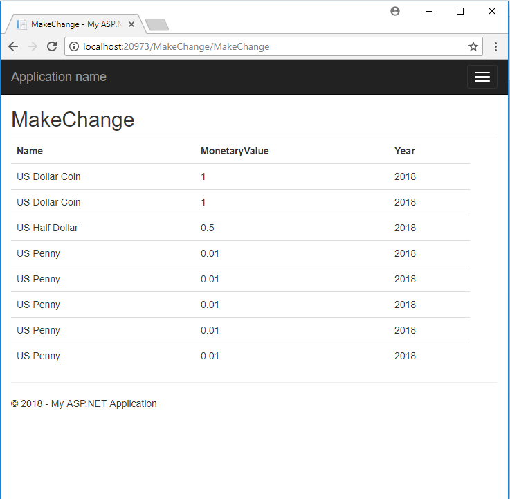This is the ASP.Net MVC version of my WPF Currency project, using the very same library and unit tests. This screenshot was taken while using Chrome as the browser.
UWP Flash Cards Project
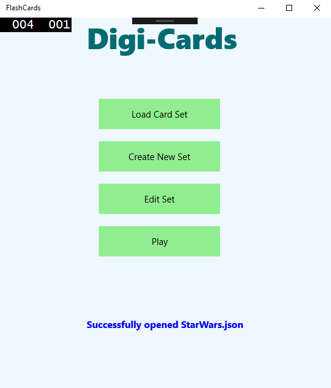 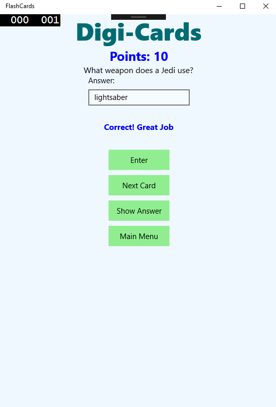 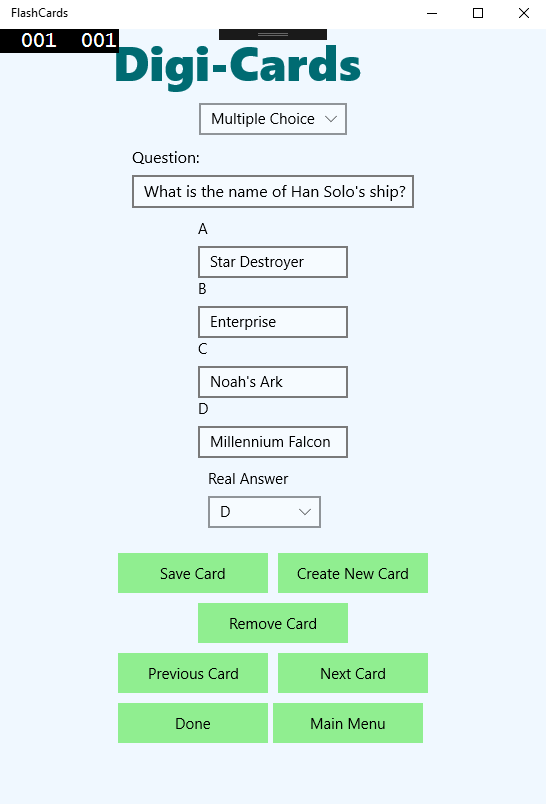This was one of my final projects last year for an Object Oriented Programming class. It is a simple UWP app that you can use to create digital flash cards of three varieties: multiple choice, matching, and fill in the blank. You can save a grouping of cards into a set and save it to a JSON file. The app handles the serialization/deserialization of the JSON files. I'd like to add in the future a new image card type.
C++ Synthesizer Project
This is a digital synthesizer created with C++ and the SFML library. It relies on keyboard input events to both play notes and change the varying settings including an amplitude envelope, filter, LFO, and 3 oscillators. Although the latency is low, it is technically not playing in real time, instead it computes the audio signal before the note is actually played. It does this by first computing the oscillator data, then passing it through the amplitude envelope and then the filter and LFO are calculated at the same time before finally being sent to the SFML audio buffer.
C++ Unreal Engine Drum Sequencer Project
This project is a Drum Sequencer I made with Unreal Engine and C++. It allows the user to create tempo synced loops of audio using a variety of interchangeable samples. The user can also change the tempo, start/stop the loop, and change the rhythmic value of the notes from quarter notes to eighth notes to sixteenth notes. It also features a visual feedback on the pads themselves to show which are active and what section of the loop is currently playing. I was actually able to use Unreal Engine's built in global timer to calculate the actual tempo values so that it is accurate.
FoodMe Web App
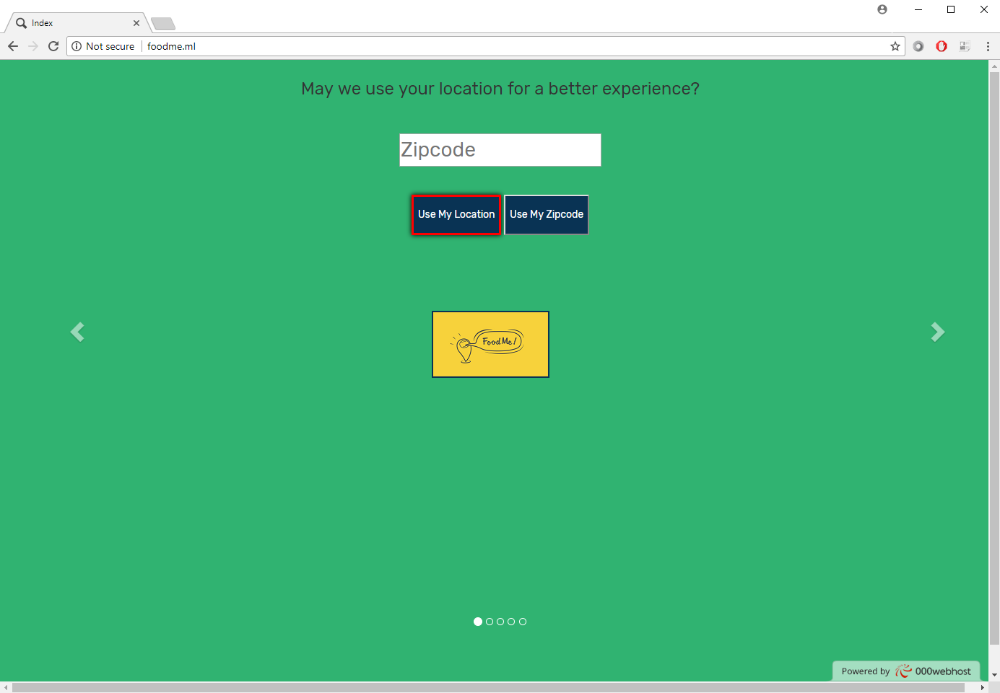 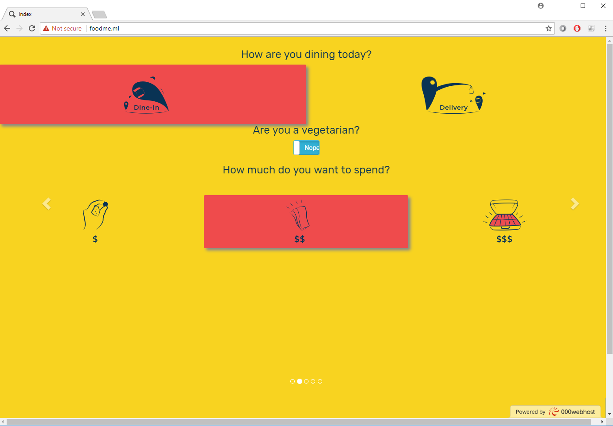 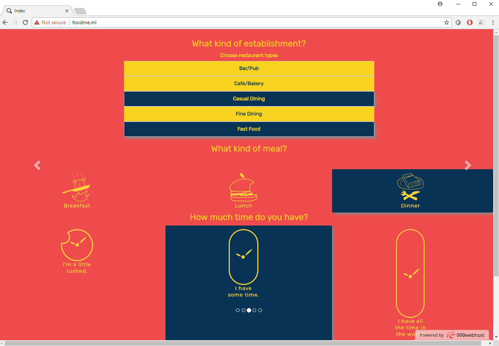 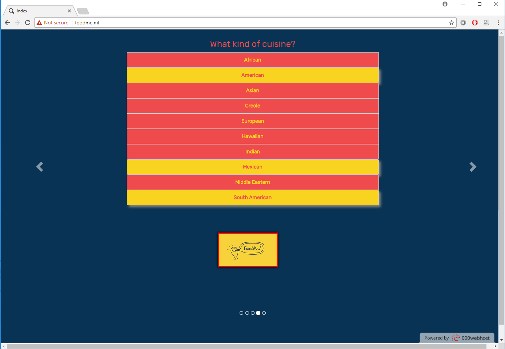 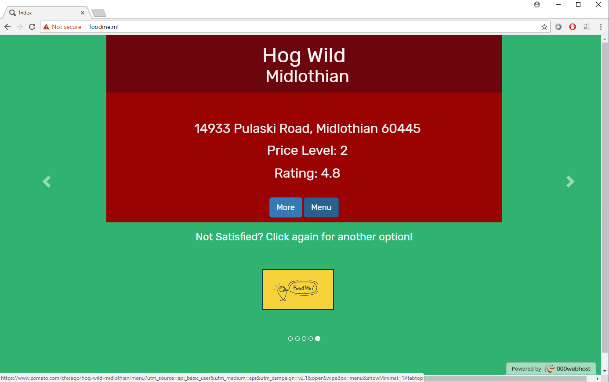This was a project I worked on in my capstone class at Columbia. I worked with a team of artists, designers, and developers to build this simple web app, optimized for both desktop and mobile. It allows users to choose from a variety of options to narrow down a search for a restaurant to eat at(or order delivery from). It includes options such as estabishment type, cuisine/cultural type, budget, location, and many others. The user also gets the option to add in a zip code or use current location to find restaurants nearby. At any point, the user can click the FoodMe button, even if he or she added no input, and be taken to the results tab, which will give the user a restaurant from a narrowed down list of restaurants. The results tab also includes the location, ratings, and links to the menu and website information of the restaurant, all provided by Zomato. All options selected by the user is sent in a HTTP GET request to the Zomato API with Javascript, where it is queried and a list of restaurants is returned in the form of JSON text. The app will then parse the JSON into restaurant objects and from there one is randomly selected. If the user does not like the results, he or she can simply click the FoodMe button again and get a different result.
PyTorch Pitch Classifier
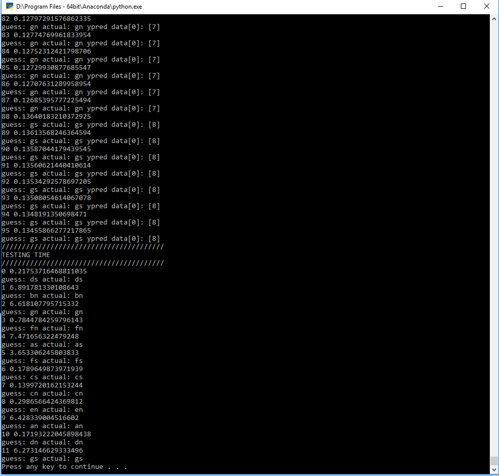This project makes use of the PyTorch machine learning library to create a simple Deep Neural Netowrk that learns to classify pitch from audio files. I have started out with a very simple set of audio files. Each is a half-second long, normalized, mono (1 channel), and consists of a single waveform. I used a variety of simple sine, sawtooth, triangle, and square waves generated from the operator synthesizer in Ableton Live. This network performs much better than expected and can produce the correct predictions very quickly. I plan on moving on to more detailed and sophisticated instruments and sounds for the next iteration on this project and try to push the limits, perhaps eventually moving onto stereo (2 channel) audio.
Numpy XOR Neural Network
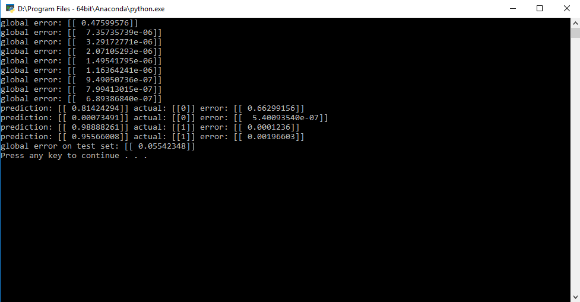A very simple numpy implementation of a 3-layer Neural Network that learns a generic XOR pattern. Based off of Trask's "A Neural Network in 11 lines of Python" blog post. This implementation is slightly different because I am using Stochastic Gradient Descent and Online Training to train the network one example at a time, each of which is randomly choosen. Although it takes longer to train, it has much better results, yielding a smaller error at the end of training and generalzing better on test sets.